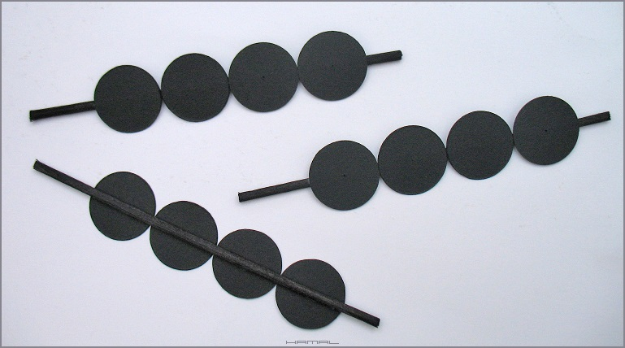
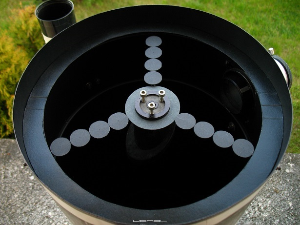
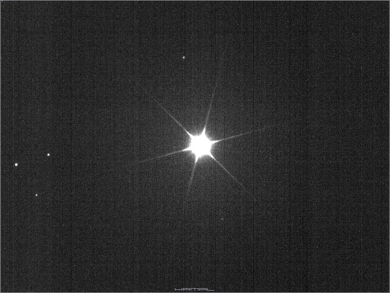
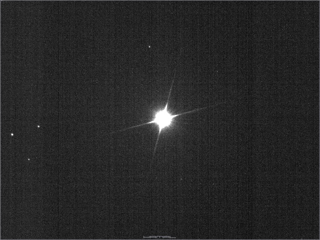
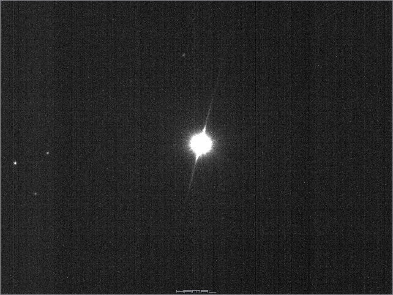
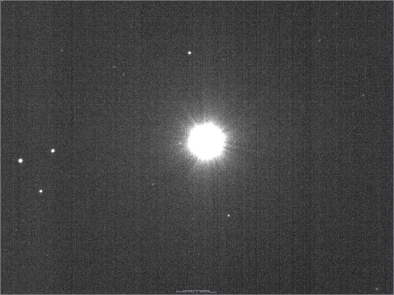
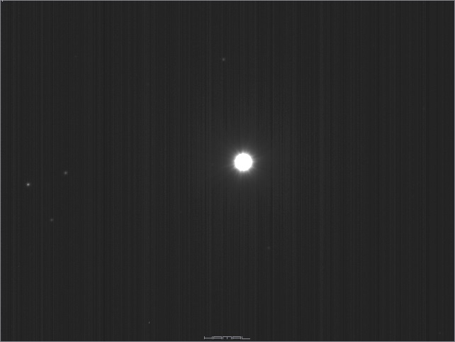
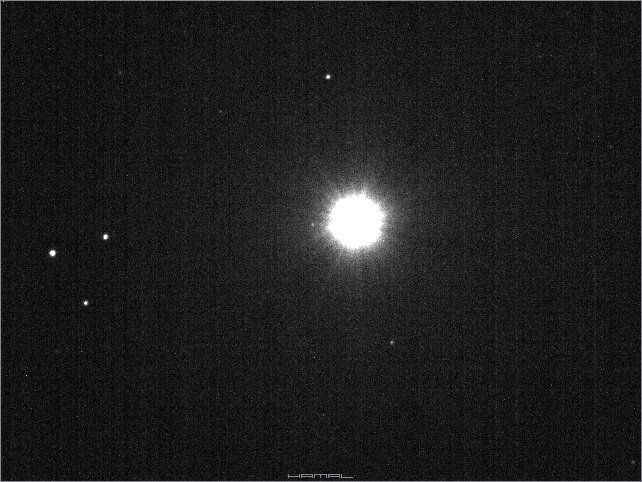

|
Wstęp Dnia 06-02-2016r, w tym wątku, pierwszy raz napisałem o tym ciekawym zagadnieniu. Zajmując się astronomią przez lata, nigdy wcześniej nie spotkałem się z tym, aby wspominano o tym zjawisku. Proszę, aby o tym pamiętano :) Gdy przeglądałem tę stronę, zaintrygowało mnie to zdjęcie, a to z takiego powodu, iż różne cuda i pomysły już widziałem, ale takie okręgi na ramionach mocowania lusterka wtórnego zobaczyłem pierwszy raz. Zaciekawiony, domyślając się, że nie są one tam dla ozdoby, postanowiłem sprawdzić empirycznie, jaki efekt ich obecność tam generuje. SPAJKI - KOLCE DYFRAKCYJNE Na poniższym zdjęciu, widzimy obraz jasnej gwiazdy, zarejestrowany teleskopem systemu Newtona, który to teleskop, u wlotu tuby, na trójramiennym mocowaniu (zwanym też pająkiem), posiada mniejsze lusterko wtórne kierujące obraz w bok tuby do wyciągu okularowego. Te trzy ramiona mocowania generują 6 rozbłysków widocznych na zdjęciu poniżej, zwane spajkami lub kolcami dyfrakcyjnymi. Więcej teorii tutaj. Gwiazda - Polluks, konstelacja - Bliźnięta (Gemini) Teleskop Newton 305/1500+ASI120MM 
BUDOWA Z czarnego brystolu, takim modelarskim narzędziem, wyciąłem okręgi o średnicy 25mm. Dlaczego 25mm? Ponieważ aby przesłonić ramiona pająka, wzorem pierwowzoru czterema okręgami, potrzebowałem właśnie ten rozmiar. Następnie, wycięte okręgi przykleiłem do patyczków do szaszłyków. Wszystko powinno być czarne, aby nie generowało w teleskopie niepotrzebnych odblasków.  UŻYCIE Następnie udałem się pod nocne niebo, wycelowałem teleskop w jasną gwiazdę i zacząłem do ramion pająka montować przygotowane zestawy w sposób zaprezentowany poniżej.  Tradycyjny obraz gwiazdy bez zastosowania opisywanego tu zestawu. Teleskop 305/1500 z trójramiennym pająkiem + kamerka ASI120MM = gwiazda Polluks z tradycyjnymi kolcami dyfrakcyjnymi .  Po założeniu okręgów na jedno ramię pająka .  Na dwa ramiona pająka .  Na trzy ramiona pająka . Prawda, że intrygujący efekt? Różne wartości czasów klatki oraz gamma i gain .    Po zdjęciu likwidatora spajków-kolców dyfrakcyjnych. . Oczywistym jest, że kółka są źródłem dodatkowej obstrukcji dla lustra głównego i dyfrakcji dla światła, oraz źródłem możliwego spadku kontrastu, jednak opis ten ma za zadanie zainteresować ciekawym, mało znanym, rozwiązaniem, które w niektórych wyjątkowych przypadkach może się okazać przydatne, a i sam fakt, występowania takiego zjawiska, jest sam w sobie wart poznania.
MOGĄ CIĘ ZAINTERESOWAĆ RÓWNIEŻ


|